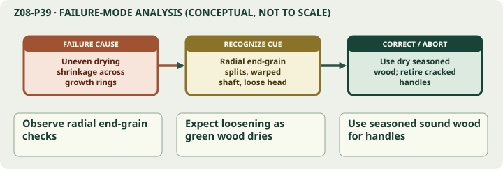

Z08-P39 · Rocks, minerals and materials · New manuscript
Green-Wood Shrinkage, Checking and Seasoning Failures
Understand how tangential and radial drying shrinkage causes cracks, warped joints, and loose tool handles.
When it applies · Evaluating green versus seasoned dead wood in camp craft and tool maintenance.
Equipment · Visual end-grain inspection.

Actions
- Recognize that green wood shrinks substantially across the grain as it dries, causing V-shaped radial checks, warping, and loosened friction joints.[R15]
- Avoid relying on freshly fallen damp wood for tight tool-eye wedges or handles because drying shrinks the wood away from the steel head.[R15, K09]
- Inspect dry seasoned wood for deep splits extending across handle necks or tool eyes before any use.[R15, K09]
Failure recognition · Fitting a damp green handle into an axe or hammer eye causes rapid loosening and dangerous head detachment once dry.[R15, K09]
Verify · Wood parts are seasoned dry and free of deep radial checks across high-stress zones.[R15, K09]
Stop or change course · Stop using any wooden handle showing widening cracks, loose eye fit, or insect tunnels.[R15, K09]
Evidence and editorial notes
- K09 · USDA Forest Service · Handtools for Trail Work (0523-2810-MTDC) (agency handbook)
- Section: Cordage, Anchors and Rigging Boundaries · Conditions: Non-life-safety camp lashing, tarps, haul lines and tie-downs
Support: Cordage strength drops significantly at knots, sharp bends, wet fibers, UV exposure and abrasion; inspect fibers before loading and never use unrated camp cord or improvised bindings for life-safety suspension or climbing.
Limitations: No universal breaking strength applies to natural plant fibers or weathered salvaged rope. · Conflicting evidence: Counters folklore claims equating improvised cordage to rated climbing rope.
Editorial note: Separates camp utility lashing/hauling from life-safety rigging. · Specialist reviewer: Rigging safety and materials mechanics
Primary source · checked 2026-11-24
Current assessment · W2C-E004 (2026-11-25) · Open: cited section not found in the source; escalated: Replacement support identified in FM 3-97.61 paras 4-1 to 4-3 (pages 4-1 to 4-3): sharp edges cut nylon rope under tension; leaving rope knotted or tightly stretched reduces strength and life over time; ultraviolet light deteriorates nylon; inspect before and after each use; select rope by task, type, diameter and tensile strength. Limits: No support found for the wet-fiber strength-loss part of K09. FM context is mountaineering rope, not camp cord. - R15 · Minnesota DNR · Native Trees of Minnesota Identification Reference (Current web edition)
- Section: Regional wood species, grain, bark, and moisture variability · Conditions: Dead downed wood and natural bast fibers in Upper Midwest forests
Support: Wood density, grain straightness, resin content, and decay state vary widely by species, tree part, and moisture history.
Limitations: Visual grain inspection cannot certify structural load capacity; avoid cutting live trees where prohibited and reject punky or cracked wood. · Conflicting evidence: None noted.
Editorial note: Reconciles B007 wood notes with material limits. · Specialist reviewer: Forestry and wood-science specialist
Primary source · checked 2026-11-25
Source lineage · New manuscript (Z08 P16 wood degradation) · Classification · New manuscript.